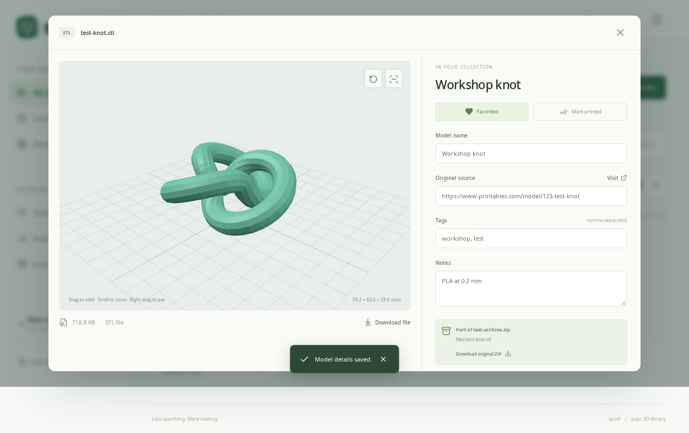
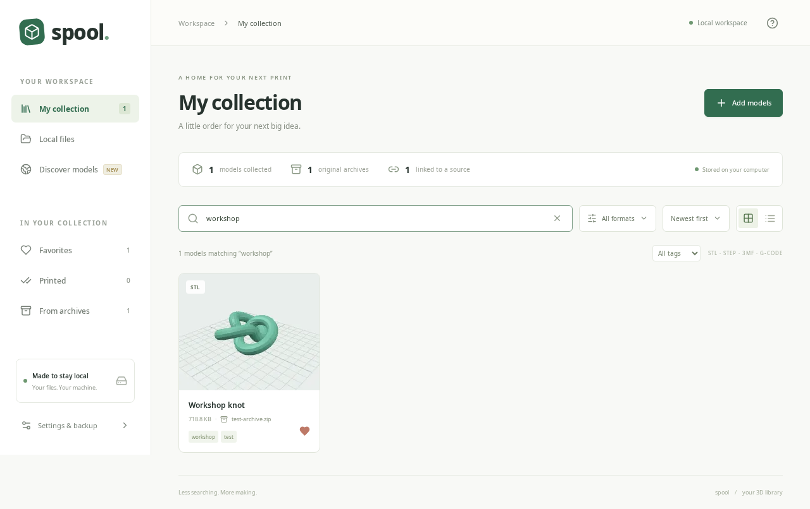

See it before you print it
Inspect STL, STEP, and 3MF geometry in 3D, or preview basic G-code toolpaths. Orbit, zoom, pan, and switch to wireframe.
A local browser and catalog for your 3D printing files. See every part, keep your downloads together, and always find your way back to the creator.
Free & open source · Runs on your computer · No account needed
A familiar browse-and-collect workflow, inspired by Drape and built around your next print.
Inspect STL, STEP, and 3MF geometry in 3D, or preview basic G-code toolpaths. Orbit, zoom, pan, and switch to wireframe.
Add a ZIP once. Catalog the print files inside, keep their paths, and preserve the original archive for later.
Attach the original creator link. Add tags, print notes, favorites, and printed status so the useful details stay with the model.
Explore your folders without changing your files. Collect copies of the models you want to keep, then search your catalog by name, tag, or source.
Discover combines results from connected Thingiverse and MyMiniFactory APIs, with shortcuts to search other model sites.

Install Node.js 22.12 or newer, open a terminal, and start Spool. Your files stay on your machine, with a ZIP backup whenever you need it.
Then open localhost:5173 in your browser.
Full setup & documentation ↗
git clone https://github.com/anolis/spool-3d-file-manager.git
cd spool-3d-file-manager
npm install
npm run build
npm start